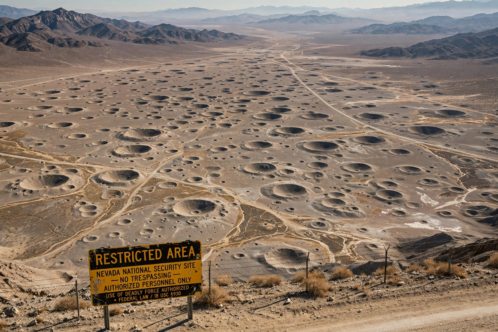

Location: Nye County, Nevada, USA
Established: 1951
Tests: 928 nuclear tests (1951–1992)
Current name: Nevada National Security Site
The Nevada Test Site, now the Nevada National Security Site, is a United States Department of Energy reservation in southern Nevada where over 900 nuclear tests were conducted between 1951 and 1992.
The first test, Able of Operation Ranger, took place on 27 January 1951. Atmospheric tests in the 1950s produced mushroom clouds visible from Las Vegas and spread fallout on downwind communities; testing moved underground after the 1963 Partial Test Ban Treaty.
Subsidence craters pockmark Yucca Flat. The site saw large anti-nuclear protests, compensation programmes for 'downwinders' and test workers, and — after the 1992 moratorium — a shift to subcritical experiments and stockpile stewardship. Its Soviet counterpart programmes are covered under Nuclear weapons of the Soviet Union.